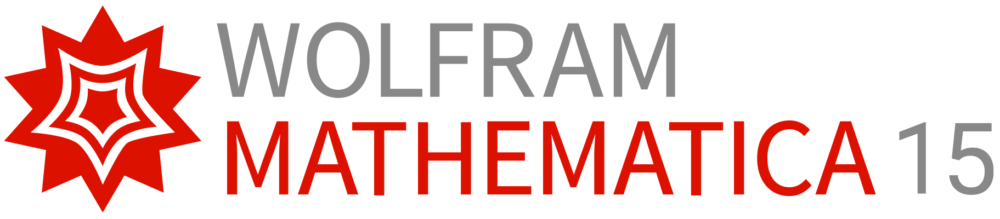
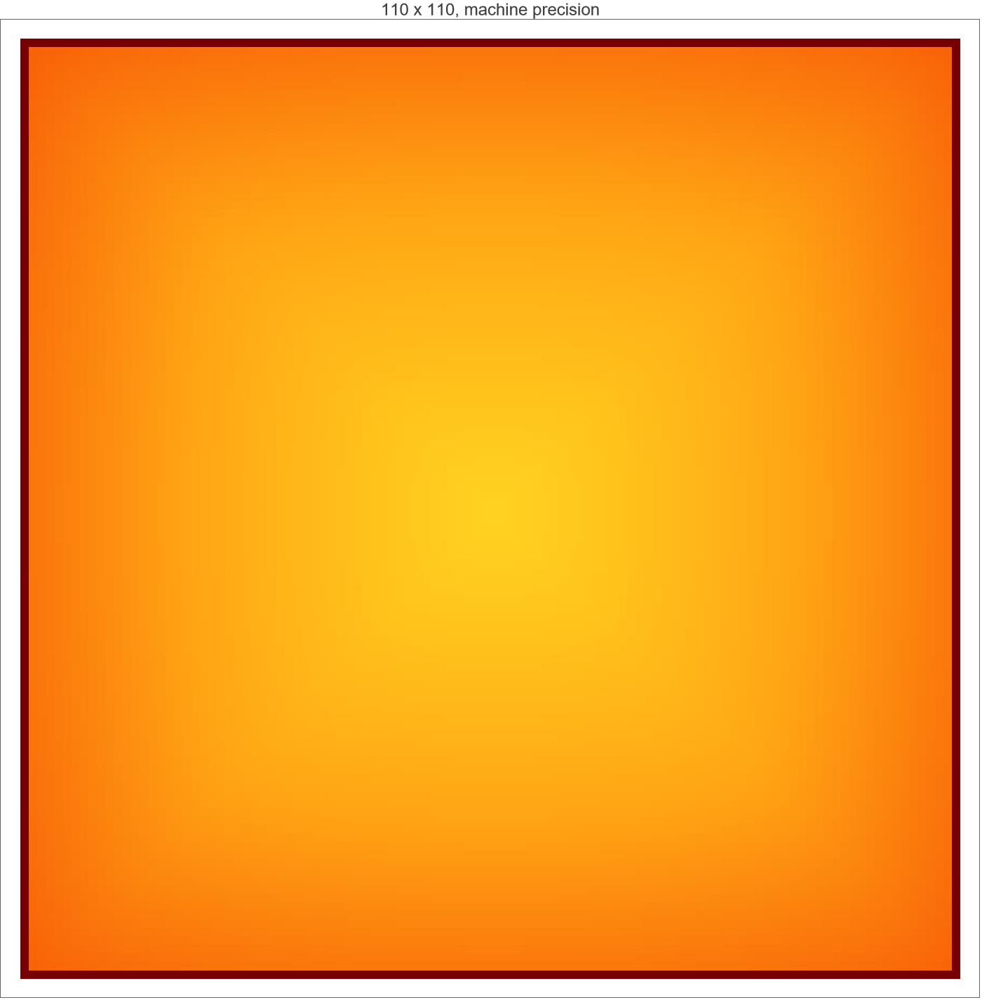
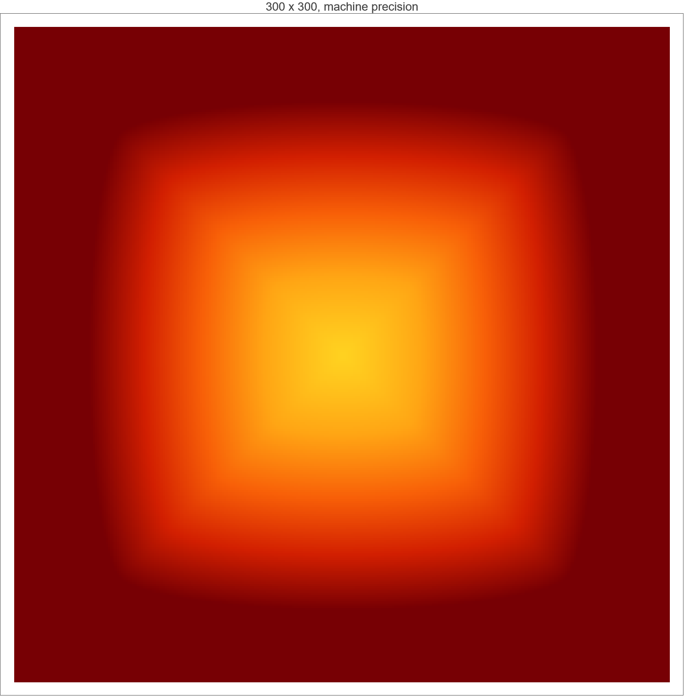

ESL technical demonstration · 2026
Beyond “nonzero”
Certifying floating-point Heat-Method numerics with Amp, Wolfram Mathematica 15, and Lean 4.

Built by ESLIsraeli reseller of Wolfram products · Wolfram global sales — Israel ↗
Certifying floating-point Heat-Method numerics with Amp, Wolfram Mathematica 15, and Lean 4.

If tiny temperatures become exact zero, the normalized direction field is undefined or misleading.
Our question: does this merely make values nonzero—or make them correct?
Construct rational mass and stiffness matrices before any numerical rounding.
Run the same normalized stencil at MachinePrecision and 500 digits without downcasting the result path.
Separate prescribed boundary zeros, finite-front zeros, and unexpected behind-front zeros.
Finite propagation is also exact: after k steps, a local eight-neighbor stencil cannot reach nodes more than k Chebyshev edges away.


Nonzero propagation and temporal accuracy are different claims.
Coefficient signs, positivity preservation, constant preservation, and zero-stencil behavior over real numbers.
110/300 grids, 500-digit stress case, zero classification, temporal refinement, and exported figures.
IEEE-754 hardware correctness, Wolfram/SciPy internals, irregular-mesh convergence, and the full Poisson distance reconstruction.
A kernel-checked theorem cannot rescue a mistranscribed model. Amp maintains the mapping from article → normalized mathematics → Wolfram implementation → Lean theorem.
Geodesic distance, path planning, mesh parameterization, collision envelopes, and navigation around narrow passages.
Heat transfer, diffusion, electrostatics, reaction transport, FEM preconditioning, and multiscale simulation.
Anatomical surface distance, segmentation propagation, dose fields, molecular surfaces, and uncertainty-sensitive inverse problems.
Failure is not limited to a blank plot. A zero gradient can change a direction field, reroute an optimizer, break a normalizer, or silently bias a downstream Poisson solve.